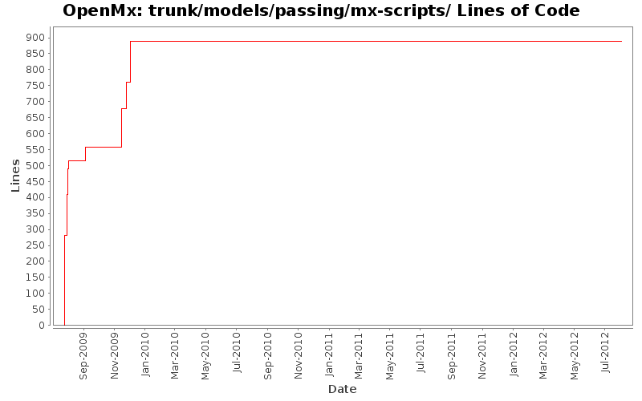

[root]/trunk/models/passing/mx-scripts

| Author | Changes | Lines of Code | Lines per Change |
|---|---|---|---|
| Totals | 31 (100.0%) | 895 (100.0%) | 28.8 |
| mneale | 6 (19.4%) | 355 (39.7%) | 59.1 |
| mspiegel | 16 (51.6%) | 282 (31.5%) | 17.6 |
| hmaes | 7 (22.6%) | 212 (23.7%) | 30.2 |
| tbrick | 1 (3.2%) | 44 (4.9%) | 44.0 |
| tbates | 1 (3.2%) | 2 (0.2%) | 2.0 |
Mering dependency tracking into the trunk.
0 lines of code changed in 3 files:
Adding latent class analysis example; an ordinal mixture distribution
130 lines of code changed in 1 file:
Added direct likelihood example: one and two-locus models & Mx1 scripts
82 lines of code changed in 2 files:
Adding corresponding Mx 1.0 scripts for mixture distribution examples
120 lines of code changed in 2 files:
added white space around select variable names to avoid error
2 lines of code changed in 1 file:
Major back-end changes, with front-end tweaks to keep up. 1) Data frames are now accepted at the back-end for data objects, and handled by omxData objects. 2) FIML Ordinal Objective function is now working. Ugly and slow, but working. Speedups will likely be added in the coming days and weeks. 3) Definition variable handling has been altered to accomodate the new setup. This also fixes a bug in handling out-of-order data columns. 4) Back-end API altered to include data object list in omxState object. 5) Minor front-end changes to accomodate data frames and enforce integer pointers.
44 lines of code changed in 1 file:
Adding DefinitionMeans.R .mx and .rst files
23 lines of code changed in 1 file:
corrected ACE
5 lines of code changed in 1 file:
ACE model files
79 lines of code changed in 1 file:
Heterogeneity Model
128 lines of code changed in 2 files:
deleting old versions
0 lines of code changed in 3 files:
Copying scripts from Hermine's email into repository.
1 lines of code changed in 1 file:
Committing mx scripts
96 lines of code changed in 6 files:
Adding mx scripts to version control
96 lines of code changed in 3 files:
Moving models that use mx to the models/passing directory.
89 lines of code changed in 3 files: